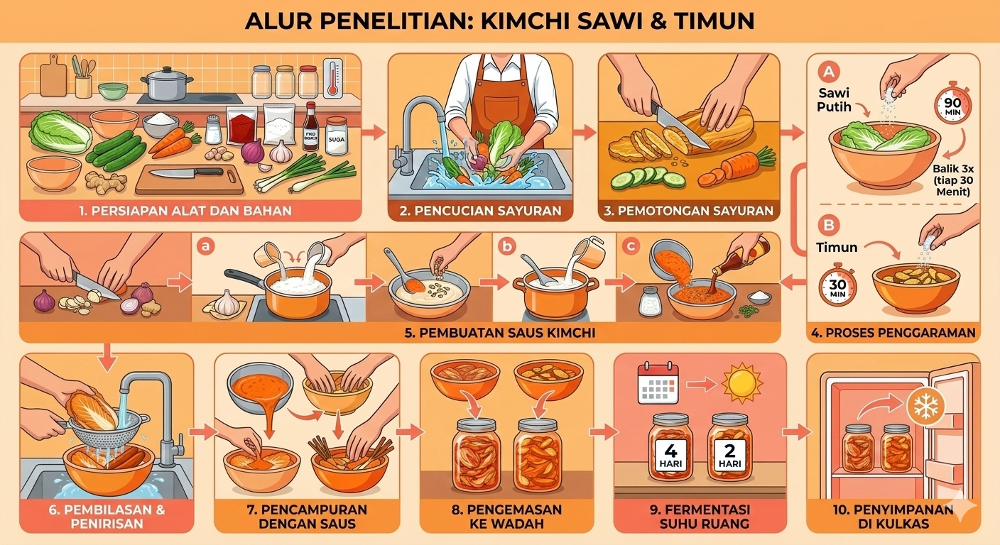

Kimchi adalah makanan tradisional khas Korea berupa asinan sayuran hasil fermentasi yang diberi bumbu pedas. Secara visual, kimchi identik dengan warna orange kemerahan yang pekat yang berasal dari bubuk cabai khas Korea (gochugaru). Rasa kimchi adalah kombinasi kompleks pedas, asam, manis, asin, dan umami (gurih) dengan tekstur renyah.
Siapkan seluruh alat dan bahan, lalu cuci bersih sawi, timun, bawang-bawangan, wortel, dan jahe. Potong ujung sawi dan kedua ujung timun, kemudian iris sawi, timun, serta wortel menjadi potongan kecil. Siapkan tiga baskom berbeda: baskom pertama berisi irisan sawi yang ditaburi garam secukupnya (diamkan selama 90 menit dan balik setiap 30 menit), baskom kedua berisi timun yang ditaburi garam (diamkan selama 30 menit), dan baskom ketiga berisi wortel serta daun bawang.
Sembari menunggu proses penggaraman, buat saus kimchi dengan mencincang bawang bombay, bawang putih, dan jahe, lalu masak tepung beras dengan air di dalam panci hingga mendidih dan mengental menjadi adonan. Masukkan gula ke dalam adonan tepung hingga larut, kemudian campurkan gochugaru, kecap ikan, serta cincangan bawang dan jahe hingga menjadi saus berwarna orange kemerahan yang merata. Setelah bumbu siap, buang air garam dari baskom sawi dan timun, bilas kedua sayuran tersebut dengan air mineral, lalu tiriskan hingga kering. Tuangkan saus kimchi ke dalam baskom sawi dan aduk hingga seluruh bagian terbalur rata; lakukan hal yang sama pada baskom timun yang sudah dicampur dengan wortel dan daun bawang. Terakhir, masukkan kimchi sawi dan kimchi timun ke dalam dua wadah berbeda yang tertutup rapat, diamkan kimchi timun di suhu ruang selama 2 hari dan kimchi sawi selama 4 hari, kemudian simpan keduanya di dalam kulkas untuk memperlambat fermentasi agar rasa asamnya tetap seimbang.
